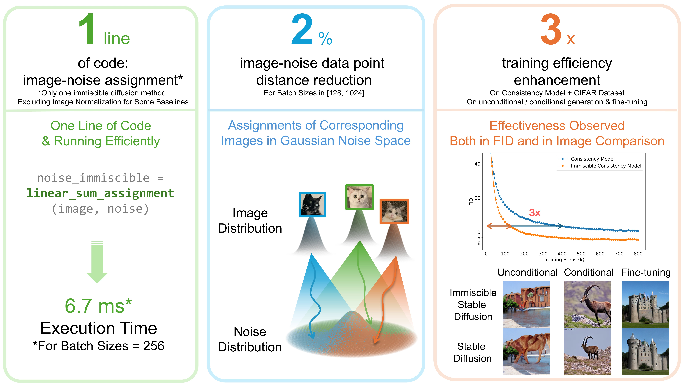

Yiheng Li 李一恒
Ph.D. Candidate
Department of Mechanical Engineering
University of California, Berkeley
Berkeley, CA
Biography
I am a 5th-year (2021-2026) Ph.D. student at MSC Lab in the Department of Mechanical Engineering, University of California at Berkeley. I am fortunate to be advised by Prof. Masayoshi Tomizuka and Prof. David Bogy.
My research interests currently focus on Diffusion Models and Autonomous Driving.
Experience
Selected Publications
View All on Google Scholar →


Honors & Awards
- J. K. Zee Fellowship, UC Berkeley 2024
- Graduate Division Block Grant, UC Berkeley 2022-2023
Academic Service
Conference Reviewer
- CVPR 2025, 2026
- ICLR 2025, 2026
- NeurIPS 2026
- IROS 2025
- ICRA 2023, 2024, 2025
- IEEE TRO